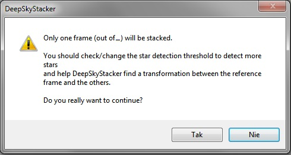
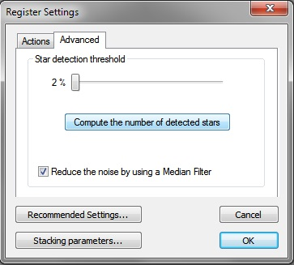
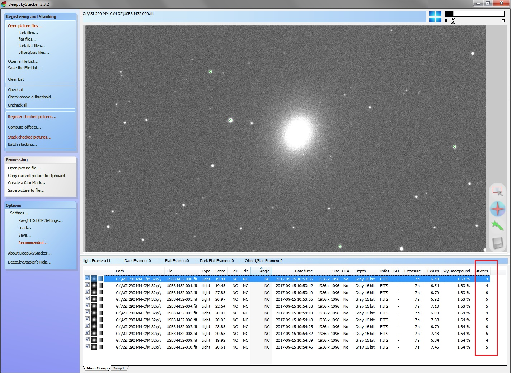
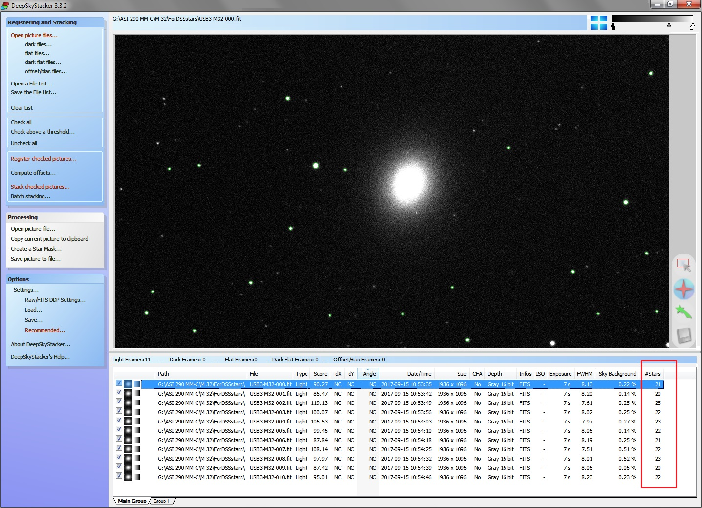
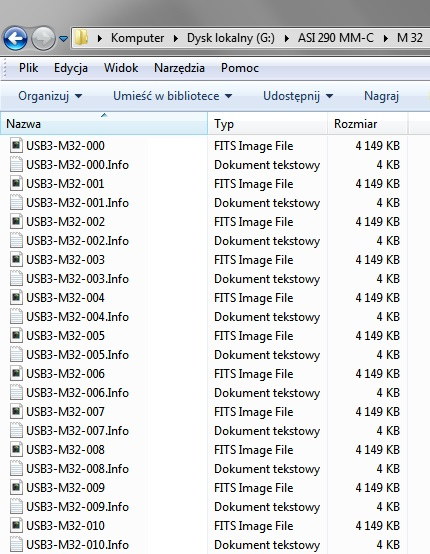
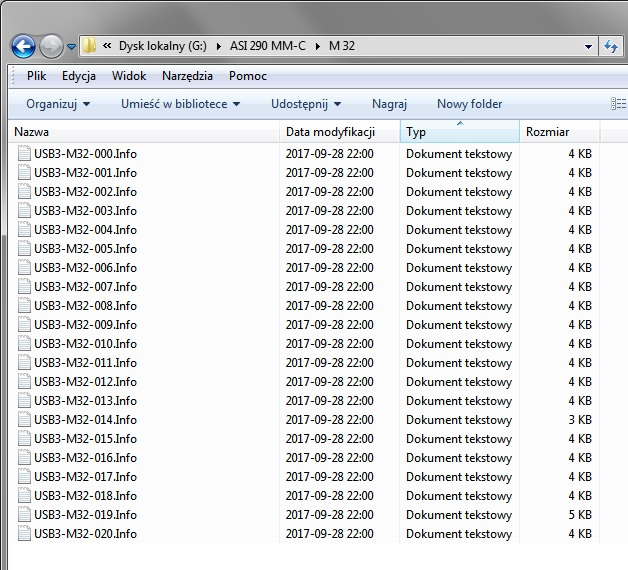

.
Du you really want to continue?
04-02-2018
|
OPIS PROBLEMU Po pobraniu naszych zdjęć do programu Deep Sky Stacker (DSS) musimy dokonać ich rejestracji (Register checked pictures...) tam w zakładce zaawansowane (Advanced) (Rys.2) dokonujemy detekcji gwiazd wyrównywania klatek. Robiąc zdjęcia w małej skali z dużą liczbą gwiazd, musimy wręcz ograniczać ich ilość użytych przez program, przesuwając suwak (Compute the number of detected stars) na wyższe wartości 70-80-90% (wysoki próg detekcji), jednak wykonując zdjęcia w dużej skali, o krótkim czasie naświetlania, bardzo często stosujemy wartość minimalną tj. 2% (niski próg detekcji). Niestety, często bywa tak, że mimo ustawienia minimalnej wartości suwaka, ilość wykrytych gwiazd mieści się w zakresie 2-6 szt. (Rys.3), co na dalszym etapie prac w programie zaskutkuje komunikatem: Only one frame (out of _) will be stacked (Rys.1), z uwagi na niewystarczającą ilość wykrytych gwiazd. Dotychczas na forach astronomicznych, jako jedyne rozwiązanie tego problemu, udzielano rady w postaci "Naświetlaj dłużej klatki, aby złapało się więcej gwiazd". Niestety, rada taka pozostaje w konflikcie z techniką astrofotografii, jaką stosujemy i jej wszystkimi zaletami, jakie ze sobą niesie, jednak jak to w życiu bywa i na tę dolegliwość jest sposób, trzeba tylko problem obejść bocznymi drzwiami :] OPIS KONCEPCJI Rozwiązanie polega na graficznym obrobieniu (kopii roboczej) wszystkich stackowanych zdjęć, poprzez ich silne skontrastowanie, co umożliwi programowi skuteczniejsze odseparowywanie gwiazd od tła i szumu. Zabieg wykonujemy, nie bacząc na degradację obrazu, gdyż po spełnieniu swojego zadania, te kopie zdjęć i tak zostaną usunięte do kosza. Tak wzmocnione zdjęcia pobieramy do DSS i poddajemy detekcji gwiazd, zamykamy program. Tym razem, jak widać na załączonym obrazkach, program nie wykrył jedynie 4-6 obiektów (Rys.3), lecz 20 -25 (Rys.4), co jest zupełnie wystarczające, aby na dalszym etapie nie ujrzeć prześladującego nas komunikatu - Only one frame (out of _) will be stacked. Następnie udajemy się do folderu, gdzie posiadamy naszą kopię stackowanych klatek i wybieramy z niego utworzone przez DDS pliki tekstowe, w których są zapisane dla każdej klatki zarejestrowane gwiazdy. Powyższe pliki wklejamy do naszego docelowego folderu z oryginalnymi zdjęciami do stackowania. Otwieramy ponownie DSS, zasysamy tym razem już docelowe zdjęcia i przystępujemy do dalszej obróbki BEZWZGLĘDNIE POMIJAJĄC - Register checked pictures... gdyż byśmy utracili, pozyskane na wzmocnionych kopiach roboczych zdjęć, pliki rejestracyjne gwiazd. W ten prosty sposób jesteśmy w stanie obejść znany od lat problem, umniejszający zalety tego fajnego programu i cieszyć się zaletami jego pozostałych funkcji. Wykonując kopię zdjęć, które posłużą jako proteza do pozyskania plików z wykazem gwiazd, należy pamiętać, że muszą one posiadać identyczną nazwę jak oryginalne pliki docelowe, dlatego najlepiej skopiować cały folder, a nie same zdjęcia. Podsumowując, wykonujemy kopie zdjęć, obrabiamy graficznie kopie, pobieramy obrobione kopie do DSS i na ich bazie generujemy pliki tekstowe z wykazem gwiazd, owe wygenerowane przez DSS pliki, wyjmujemy z folderu z kopiami roboczymi i umieszczamy w folderze z oryginalnymi docelowymi zdjęciami do stackowania, pobieramy do DSS docelowe zdjęcia i dokonujemy stackowania pomijając etap rejestracji gwiazd. Prawda, że proste? :) GRAFIKA 1. Only one frame (out of _) will be stacked Komunikat powodowany zbyt małą ilością wykrytych gwiazd. Tylko jedna klatka z ... zostanie zestackowana. Chcesz kontynuować?  2. Register checked pictures.../Advanced Ustalanie progu wykrywania gwiazd.  3. Detekcja gwiazd oryginalnej surowej klatki nr 000 w ilości 4 gwiazd (rozjaśnionej jedynie podglądowo w DSS dla lepszej widoczności - suwaki w prawym górnym rogu)  4. Detekcja gwiazd kopi klatki nr 000 w ilości 21 gwiazd, ze wzmocnionym trwale kontrastem w innym programie graficznym  5. Pliki tekstowe wygenerowane przez DSS zawierające wytyczne gwiazd wyrównania o nazwach tożsamych ze zdjęciami na których podstawie zostały wygenerowane.  6. Jedynie te pliki rejestracyjne przenosimy z folderu ze zdjęciami roboczymi do folderu docelowego, dodając je do oryginalnych docelowch zdjęć.  
|